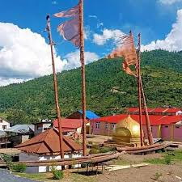

प्राकृतिक, सांस्कृतिक, कला कौशलता , देवल, पञ्चदेवल, भाषा, साहित्य, सभ्यता, वस्तुकला, मूर्तिकला, शिल्प सौन्दर्य देखि लोकसाहित्यको विश्वको एक प्राचीनतम नमुना, को रूपमा नेपालकाे कर्णाली प्रदेश अन्तर्गत जुम्ला जिल्लाको सिजा खोला क्षेत्रमा पर्दछ।
यहाँ कुनै समयमा धन-धनाड्यले सम्पन्न, उन्नत देश थियो। भने अहिले नेपालभित्रको एक क्षेत्र बनेको छ। नेपालको त्रिशुली नदीदेखि पश्चिमतर्फको सुवर्ण भूमि खस मण्डल भनेर चिनिने यो ठाउँ हाे। यहाँका खस सम्राट नागराजले सिंजा पुरी नगरको निर्माता हुन्। त्योभन्दा अगाडि यहाँ भुरे, टाकुरे जाति, प्रजातिका दुर्लभ राज्य र सोको शासनलाई एक सूत्रमावादी विशाल खस राज्यको स्थापना गरे । अशोकचल सम्म का छ पुस्ताले सिजा केन्द्रित विशाल खसराज स्थापना गरी शासन पद्धति चलाएका थिए। त्यसकारण नेपालको एक विशिष्ट ठाउँभित्रको क्षेत्र मा यो बृहत उद्यम स्थापना गरिएको छ।

पहिले मानसरोवरको खाडी प्रदेश र तिब्बतको गंगे प्रान्तलाई समेटेर आफ्नो बचत्व कायम गरेको थियो।
नागराजले विक्रम सम्वत १२०७ (ई.स. १२औं शताब्दी) मा तिब्बतको खाडी प्रदेशबाट जावेश्वर ११५० ई. मा खस राज्यको स्थापना गरेका थिए। त्यो समयमा यस क्षेत्रलाई जालेश्वर देश भनिन्थ्यो।
प्राकृतिक, सांस्कृतिक रूपमा अति सुन्दर ठाउँ तल हिम नदी बगेको छ भने , त्यस सँगै जोडिएकाे रैथाने बाली उत्पादन हुने खेतहरू अन्नबाली उत्पादन हुन्छ ।
संसारकै उच्च स्थानमा ३०५० मिटरमा मार्सीधान, स्याउ, सिमी, भटमास, आरु, ओखर जस्ता रैथाने बाली उत्पादन हुन्छन् भने त्योभन्दा माथि घर घरबारी छन् जहाँ मानिस बसोबास गर्छन् त्योभन्दा माथि पाखोबारी छ जहाँ गाई गोरु घोडाघोडी को चरनको रूपमा प्रयोग हुन्छ । सोभन्दामाथि विशाल रानीवन जंगल र पाटनहरू छन्, त्यहाँ अति मूल्यवा जडीबुटी पाइन्छ जस्तै यार्सागुम्बा, गुच्ची च्याउ , शिलाजित, पाखन वेद हाते कान्छी जस्ता अति महङ्गा जडीबुटीको खानीको रूपमा रहेको छ। यसको ऐतिहासिक कुरालाई हेर्दा राजा सम्राट अशोकदेखि क्रचल, श्री पालवंश, नागराज, समुन्द्र वंश, चाप, सूर्यवंशी पालको शासन, संग्राहम मल्ल, जितारी मल्ल, जालनदारी मल्ल, रिपु मल्ल, संग्राहम मल्ल, अक्षय मल्ललाे राज्य गरेको ठाउँ सिजा सभ्यतालाई अकबरी सुन भन्ने गरेका थिए।
सम्पर्क जानकारी:
नाम: पूर्ण प्रसाद आचार्य
सम्पर्क नम्बर: +९७७-९८४९०२६९१९
इमेल: purnaacharyaa@yahoo.com